Engineering & Innovation
Exploring design, prototyping, robotics, and engineering solutions.
I'm a student passionate about engineering, sports, technology, and innovation. Through hands-on projects and extracurricular activities, I enjoy exploring challenges, developing new skills, and turning ideas into meaningful solutions.
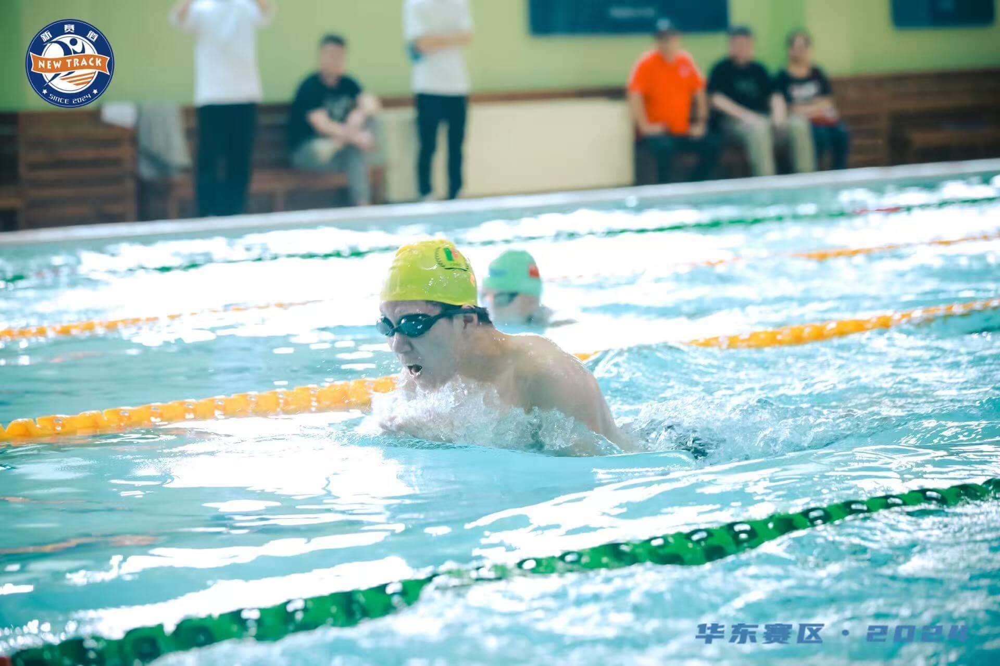
Exploring design, prototyping, robotics, and engineering solutions.
Building discipline, teamwork, and resilience through swimming and soccer.
Connecting technology, business, and real-world problem-solving.
A little about my interests, experiences, and the things that motivate me.
I'm a student who enjoys learning by doing. Whether I'm building a robotics project, experimenting with engineering designs, or training in sports, I value curiosity, consistency, and continuous improvement.
I hope to combine engineering and technology with creative thinking to solve problems that matter in the real world.
My interests span several areas where teamwork, technology, and creativity come together.
Experiences that have helped me grow as an athlete, teammate, researcher, and problem-solver.
Swimming has taught me discipline, perseverance, and how to set goals while continuously improving my performance.
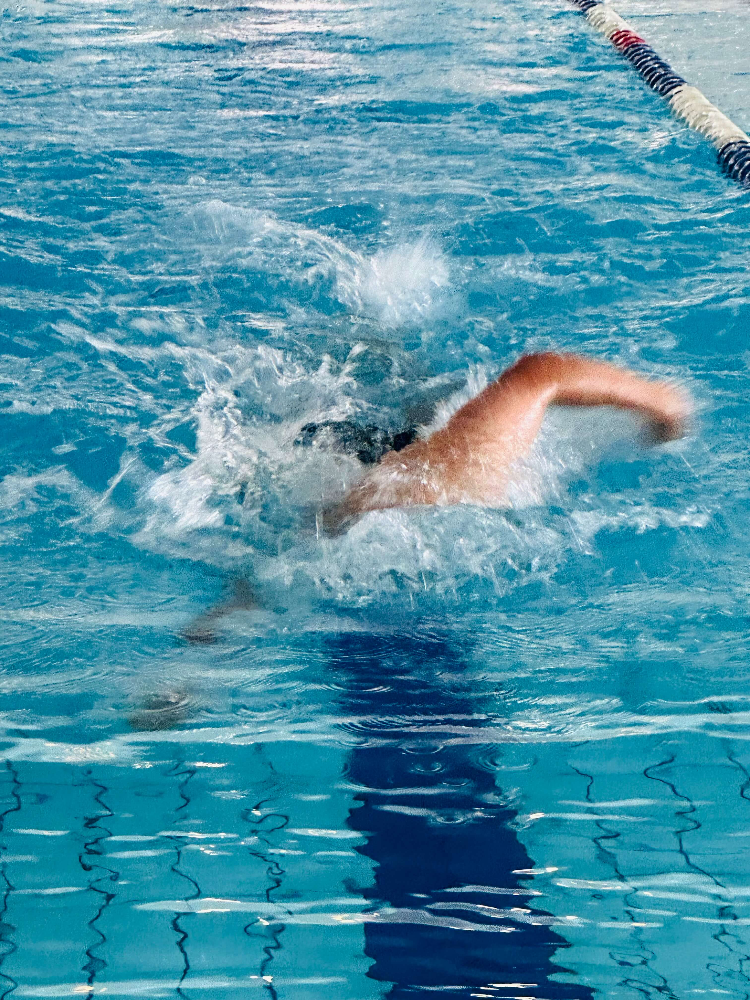
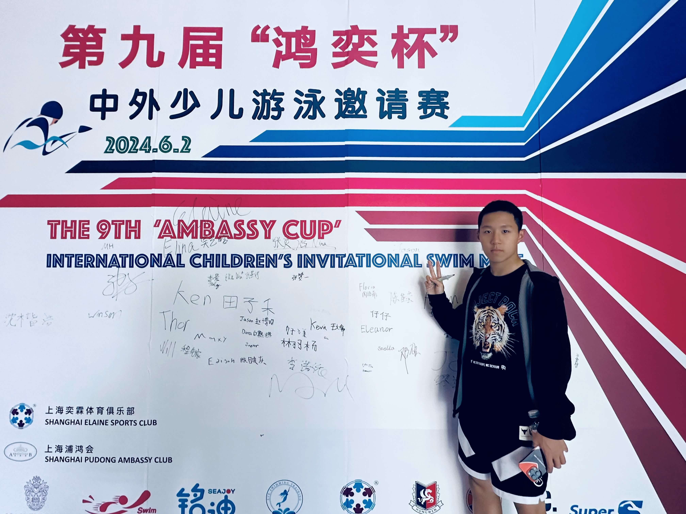
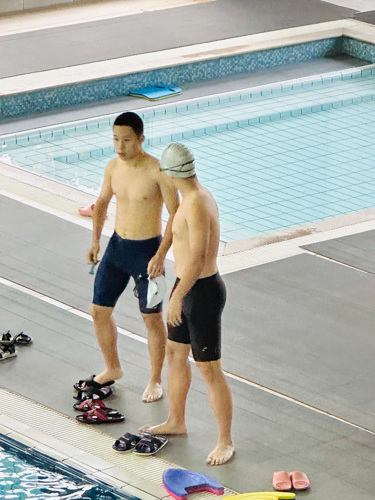
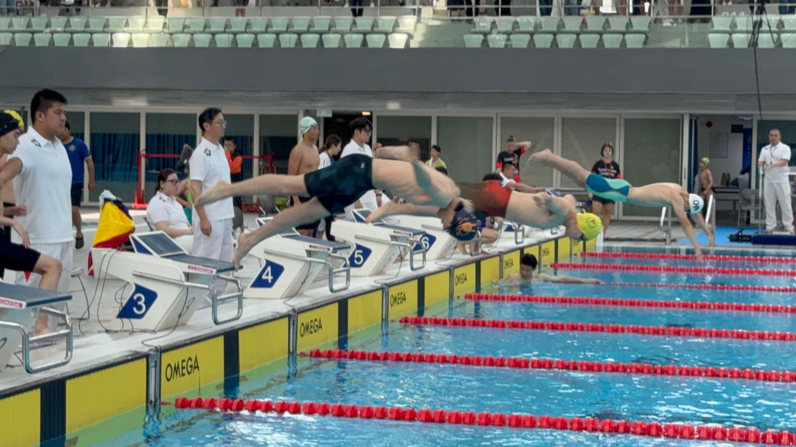
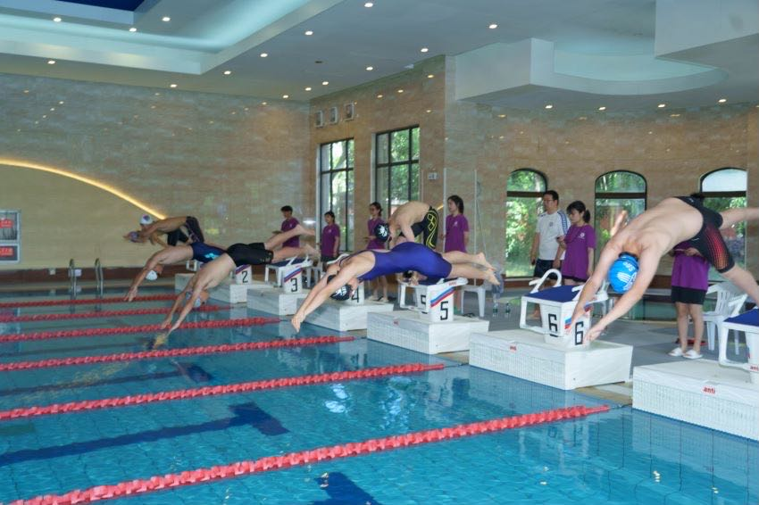
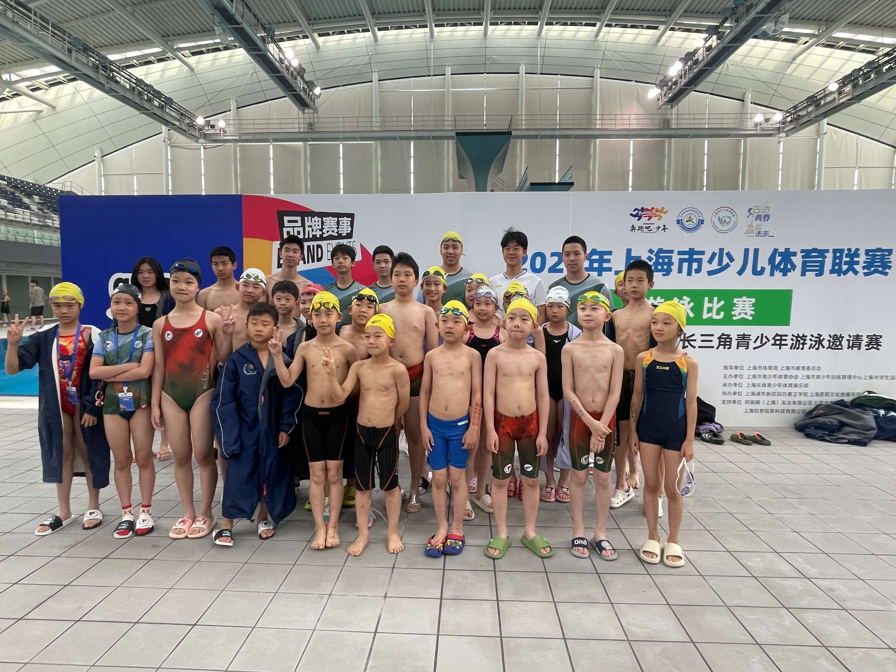
Playing soccer has strengthened my teamwork, communication, adaptability, and ability to work toward shared goals.
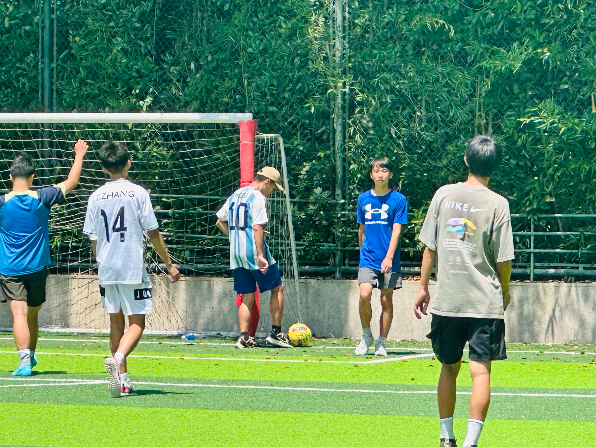
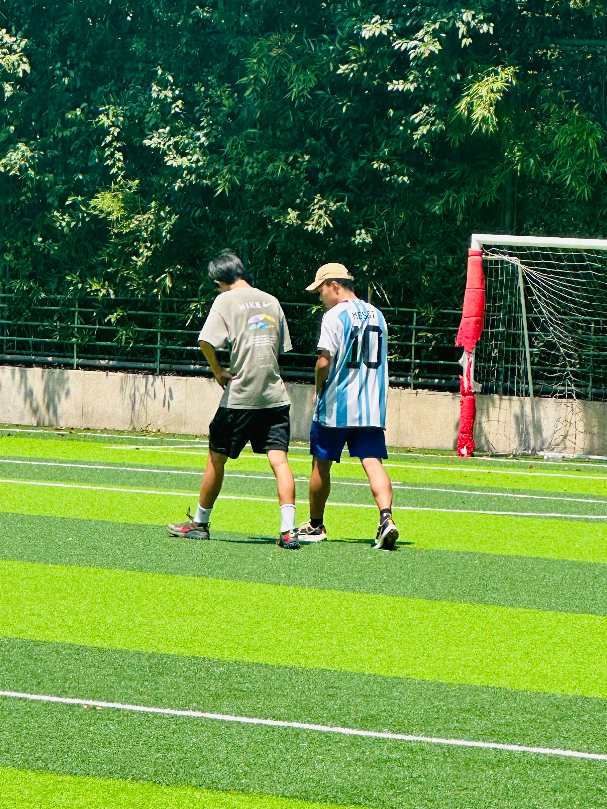
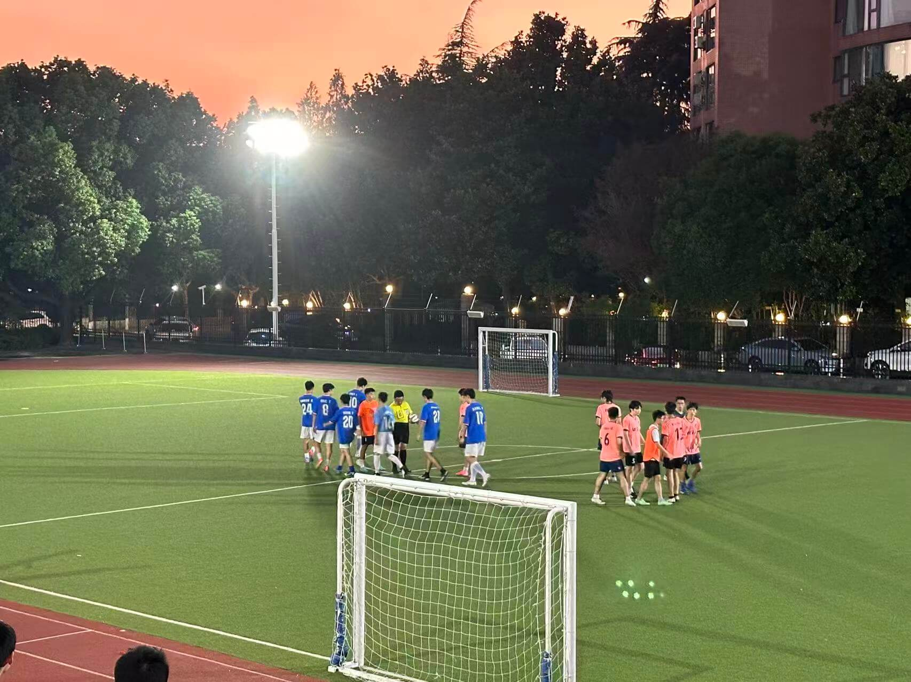
Participating in FTC robotics has helped me explore robot design, engineering, programming, and collaborative problem-solving through hands-on challenges.
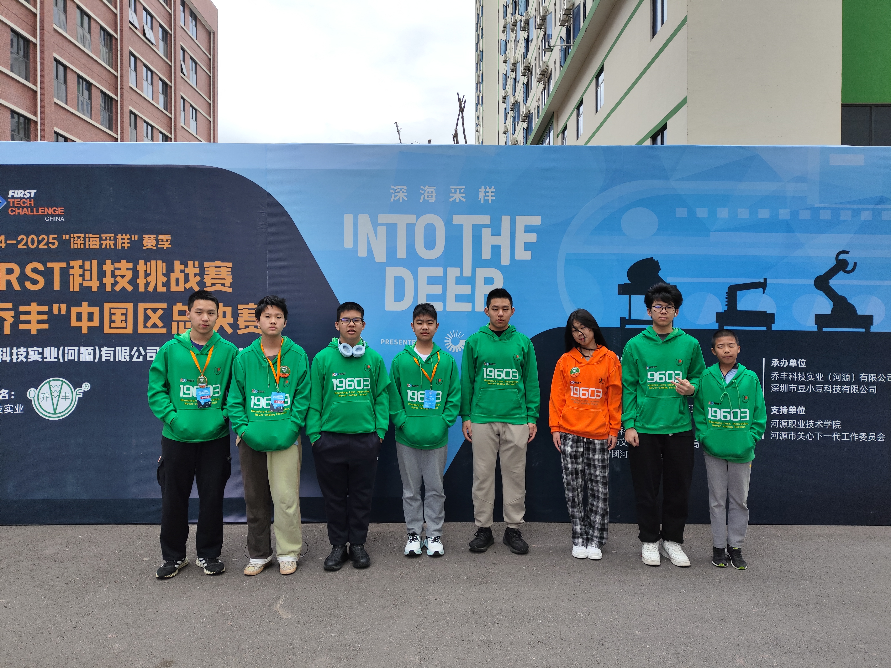
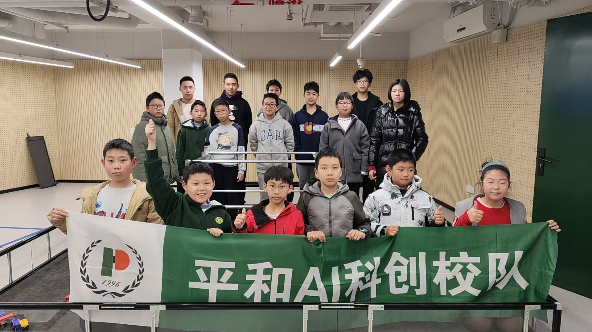
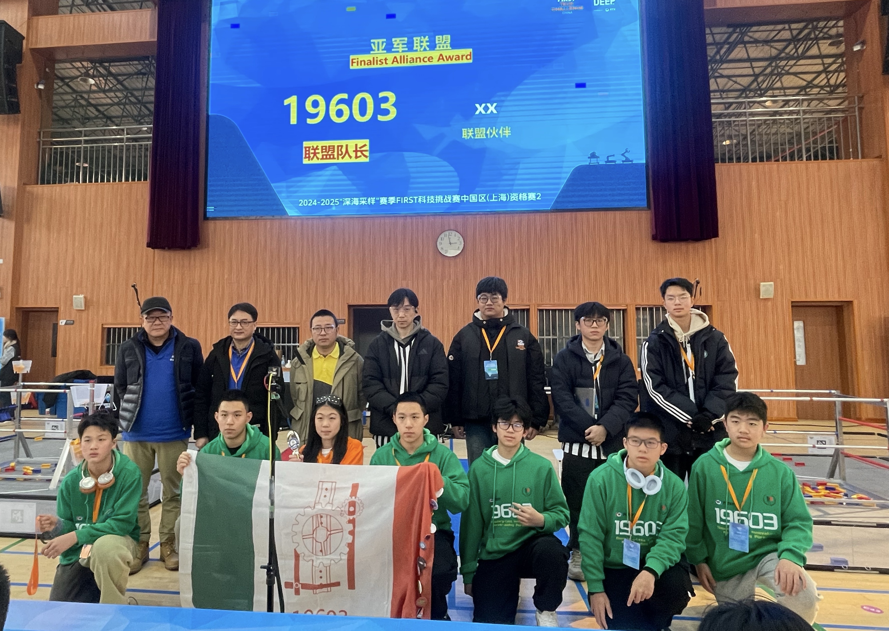
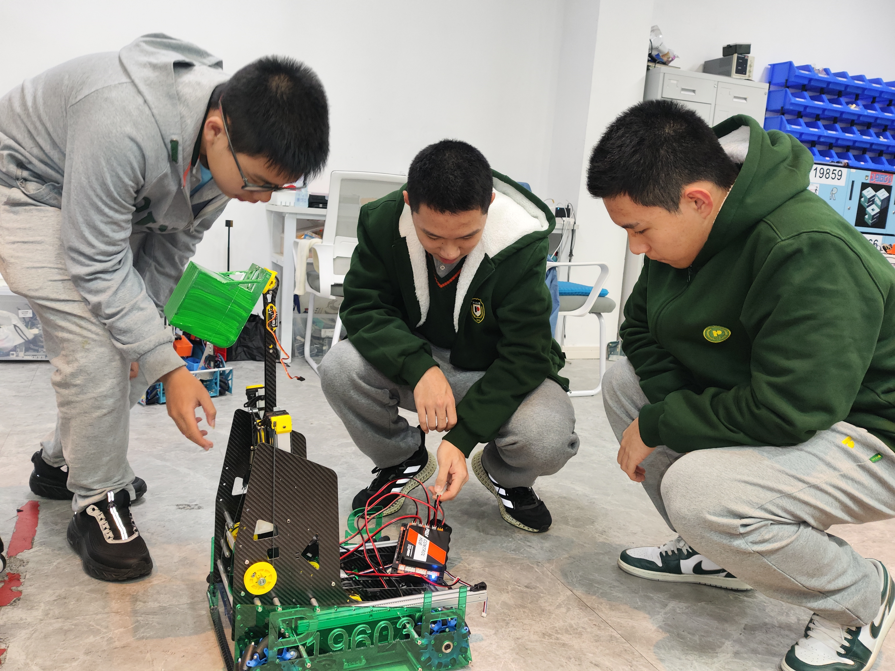
Exploring new technologies and creative approaches to building solutions through collaborative learning and experimentation.
Exploring the relationship between youth sports, business, and technology, with an interest in how innovation can improve sports experiences and organizations.
Studied mechanics through hands-on labs, including mousetrap car construction, bending tests, and spaghetti-bridge design. Improved structural performance through iterative testing.


Supporting swimming-related activities and contributing to a positive environment for participants through service, responsibility, and teamwork.


Participating in school band activities while developing musical skills, concentration, listening, and collaboration through rehearsals and performances.


Engineering projects focused on practical problems, thoughtful design, and real-world applications.
A water-safety engineering concept exploring wearable technology and drowning detection. The project focuses on design, monitoring, and alert concepts that could help improve awareness of potential danger in aquatic environments.


A marine technology concept focused on monitoring wave conditions and exploring how a vessel could collect useful environmental information. The project brings together engineering design, observation, and practical problem-solving.
I'm always interested in learning, exchanging ideas, and exploring opportunities related to engineering, technology, sports, and innovation.
jasonhsx@126.com